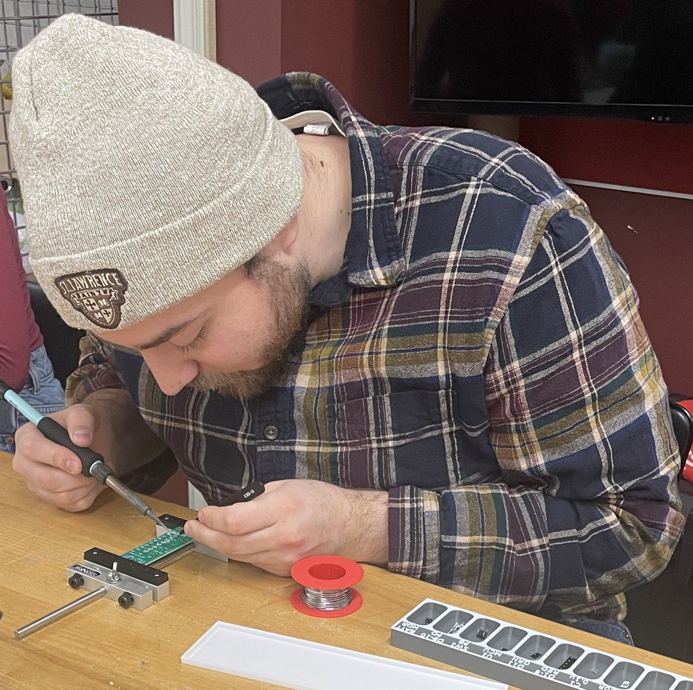
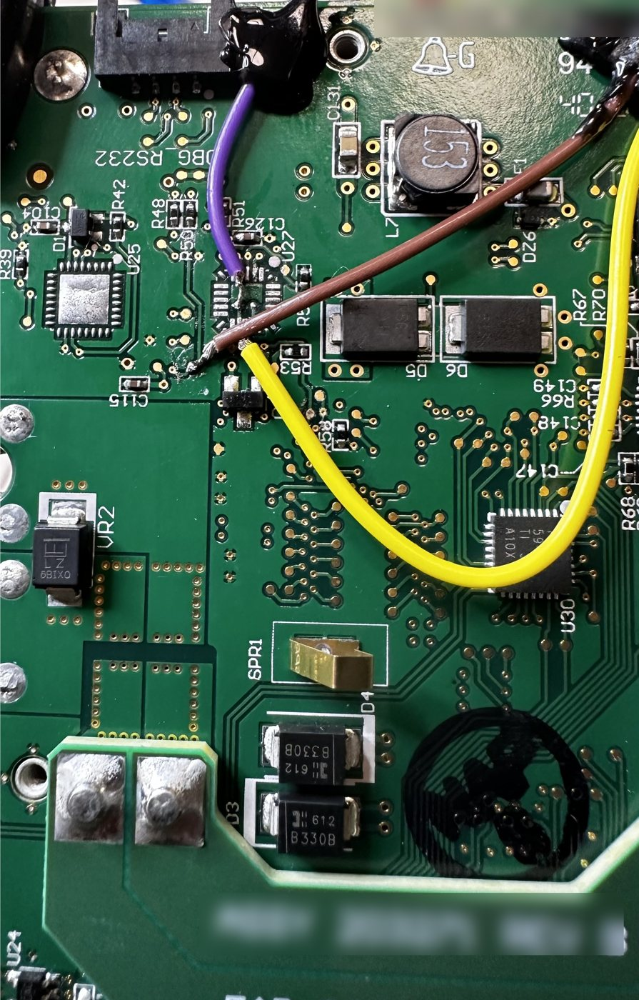
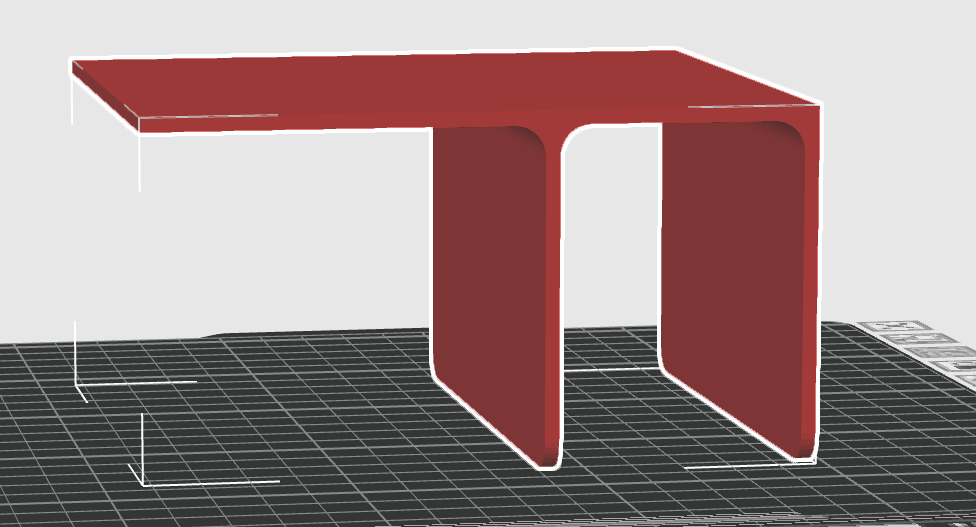
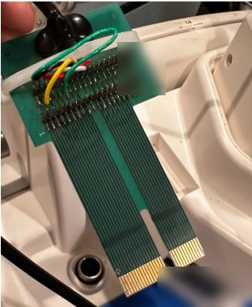

Legacy Medical Machine Retrofit Project
Integrated STM microcontroller boards into legacy medical equipment hardware, performing chip removal, soldering, and serial encoder implementation to retrofit the system. Some details, including the client and specific hardware, are omitted at the company's request.
The Challenge
Overview
The project began when a contact reached out to The Warbird Factory seeking skills in electronic modification and 3D printing. Recommended by my manager, I stepped up to lead the effort while sharpening my fabrication skills under the mentorship of our lead machine shop owner.
Reverse Engineering & Analysis
Mechanical Deconstruction and Mapping
First was the meticulous teardown and analysis of the legacy medical hardware. Because the equipment was both scarce and highly sensitive, this phase required a rigorous approach to ensure no physical or functional damage of the original hardware. After taking it apart I was able to analyze some of the internal systems and with the help of the machine shop owner able to relate them to other hardware, which made the process a lot easier. I was able to map the system architecture and mark what component interactions I needed to keep track of. Through this I could find where to pull power, where to connect wires for analysis, and where I could place the boards

Powering the New Hardware
Rather than adding a separate power source, I powered the new boards from the machine itself. Following the machine's wall plug inward led me to its internal power supply; by looking up the supply's model online, I identified two wires I could safely draw power from. The supply ran at 12 V, while the STM boards needed 5 V, so the machine shop owner built a compact step-down converter from a repurposed wall adapter, a roughly $3 part. I routed its output to a single USB power hub that fed all three boards, then verified a steady 5 V on test leads with a multimeter before connecting any hardware.
Electrical Integration
Solder Points & Removable Harnesses
The machine was divided into three functional sections, each paired with its own STM board. Connecting to them meant soldering onto micro test points, pads small enough that soldering them is generally not recommended without specialized equipment. Working under magnification with flux, I soldered 24 AWG leads, trimming away half of each wire's strands so it would seat on the tiny pads. It took patience: a few lifted pads and many redos before every joint was solid.
Each set of leads terminated in a removable connector, circular 4-pin aviation-style connectors sourced from the shop's aircraft parts inventory, plus a Molex connector at the motherboard. Any STM board can be unplugged and pulled for maintenance without desoldering. Inside the housing, wiring was secured using the machine's existing screw holes and adhesive tie mounts, with zip ties keeping every run taut and clear of moving or hot components.

Signal Analysis
The same connection points served a second purpose: capturing the machine's internal communication. Using a Saleae Logic 2 analyzer, I recorded I²C and serial traffic while the machine ran, and a serial encoder let us observe how the STM board code interacted with the original electronics. My role was to run the capture sessions and validate that each one was clean and complete before sending it to the third-party software team, whose analysis of that data directly shaped firmware development.
External Programming Port
To make updates practical, I drilled into the machine's housing and mounted a sealed aviation connector as an external programming port. It connected to the internal powered USB hub, giving access to all three boards through a single port, so new firmware could be flashed without opening the machine or removing any hardware. Our team used it for every software update during development.
Mechanical Design
Designing the F-Bracket
The three STM boards had to fit inside the machine's tight internal clearances, so I designed a custom F-shaped bracket in Fusion 360 to hold them. The design had to satisfy several constraints at once: fit the available space precisely, remain easily removable for maintenance, withstand the heat inside the machine, and stay rigid with little to no sag.
I measured the space with calipers, then built a cardboard scrap model to confirm the fit before printing. The design went through eight iterations before it fit reliably. Rather than adding new mounting points to the machine, I drilled screw holes into the back of the bracket to match existing screws inside the housing, and sourced longer screws to account for the bracket's added height, so it installs and removes without any permanent modification. The boards mount to the bracket on standoffs bonded to its surface.
After researching filament options against these requirements, I printed the bracket in PETG, which offered the heat resistance and stiffness we needed. Our printer struggled with bed adhesion, so a very large brim was required to get a clean print.

Shielding from Interference
During testing, parts of the build would only function when a large ground source was placed near exposed wiring, a sign that electromagnetic interference from the machine's high-voltage components was disrupting the signals. After diagnosing the issue with the machine shop owner, I added ferrite cores and replaced vulnerable runs with shielded wiring, which resolved the interference.
Custom Interface PCB
One of the machine's user-facing components needed to be replaced with a custom board that the new electronics could work with. Before designing anything, we tore down the subsystem it connected to and mapped every connection. The machine shop owner designed the replacement PCB in KiCad and ordered it through PCBWay. It plugs directly into the machine's original connector slot, so the change is invisible from the outside. I hand-soldered the headers and wiring that route its signals to the STM boards, then validated the complete assembly through full functional testing.

Installation & Handoff
Installation & Testing
With every component built, I installed the bracket, harnesses, power supply, and interface PCB into the machine and ran full functional tests to confirm the integrated system operated correctly.
Documentation for Handoff
My internship ended before the project did, so I made sure it wouldn't stall when I left. I wrote a complete handoff package: a bill of materials, the bracket's print files, and step-by-step instructions with annotated photos marking each connection and solder point. Anyone assigned to the project after me could pick it up and continue, or replicate the retrofit on another machine, without having to rediscover what I'd done.
What I'd Do Differently
I'd document as I go. I assembled the BOM and instructions largely at the end, and by then some early steps were hard to recall exactly. Now I keep a running build log and BOM from day one.
Outcomes
A self-contained, serviceable three-board retrofit, fully documented for handoff.
- Retrofitted a legacy system by integrating STM microcontroller boards: chip removal, soldering, and serial encoder implementation.
- Designed a CAD bracket tray enabling efficient integration of 3 STM boards within a constrained space.
- Coordinated with third-party software developers to integrate updated code into existing hardware.
- Designed a removable, PETG-printed mounting bracket through eight iterations, installed with no permanent modification to the machine.
- Diagnosed and resolved EMI issues using ferrite cores and shielded wiring.
- Context
- The Warbird Factory
- Tools Used
- Soldering station with magnification, multimeter, Saleae Logic 2, 3D printer (PETG)
- Software
- Fusion 360, Saleae Logic 2
- Year
- 2024–2025